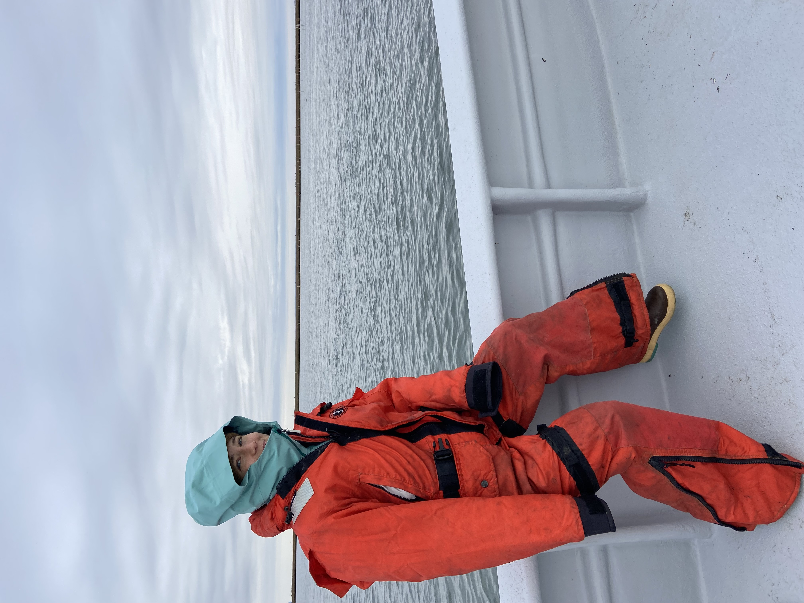
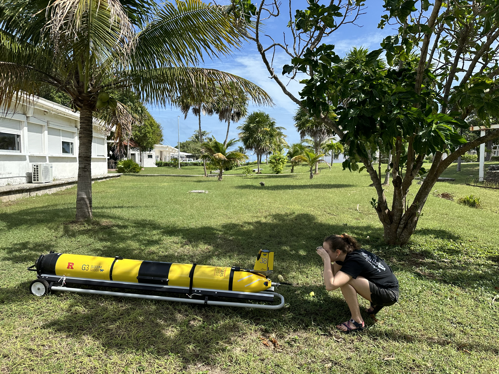

Physical Oceanography · Rutgers University
Hi, I’m Becca Horwitz.
I’m a PhD candidate in Physical Oceanography at Rutgers University. My research explores the connections between physical and biological processes in coastal ocean systems and how these interactions shape marine ecosystems.
I integrate a range of observational tools—including satellite observations, ocean gliders, meteorological data, and high-frequency radar—to investigate historical trends and real-time ocean dynamics. I am passionate about communicating my findings to diverse stakeholders, including coastal communities, policymakers, and the fishing industry, to support informed responses to environmental change.
Looking ahead, I hope to contribute to a better understanding of coastal systems worldwide by helping to expand ocean observing networks to improve public access to critical ocean observations.
PhD Research
My doctoral research focuses on the Mid-Atlantic Bight, where I investigate how physical oceanographic processes influence regional ecosystems. This densely populated coastal region supports important commercial fisheries and marine resources, making it particularly vulnerable to climate change.
My thesis examines the drivers of extreme ocean temperature events in the region and explores how these events may influence primary productivity, fisheries, and biogeochemical cycles.


Around the web
Let’s stay in touch
CV
Download CV (PDF)Education
Your University
Your College
Research experience
Role and location